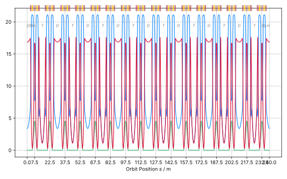

Summary of BESSY II Design Lattice 1996
Data is generated by apace
Info
| Title | BESSY II Design Lattice 1996 |
| File | b2_design_lattice_1996.json |
| Author | HZB |
| Description | Fully symmetric Design Lattice of the BESSY II storage ring (Here as reference and to test stuff!) |
Optical Functions Plot
Global Machine & Lattice Parameter
| Parameter | Value |
|---|---|
| Energy | 1.7e+03 |
| Cell length | 240 |
| Mom. compaction | 0.000732 |
Detailed Lattice Parameter
| Parameter | Value |
|---|---|
| Tune x | 17.8 |
| max beta x | 17.6 |
| min beta x | 0.301 |
| mean beta x | 8.55 |
| max eta x | 0.45 |
| Parameter | Value |
|---|---|
| Tune y | 6.74 |
| max beta y | 21.1 |
| min beta y | 1.19 |
| mean beta y | 10.8 |
| max eta y | 0 |
Synchrotron Radiation Integrals
| Parameter | Value |
|---|---|
| I1 | 0.176 |
| I2 | 1.44 |
| I3 | 0.331 |
| I4 | -0.00465 |
| I5 | 0.00175 |
| Emittance | 5.13e-09 |